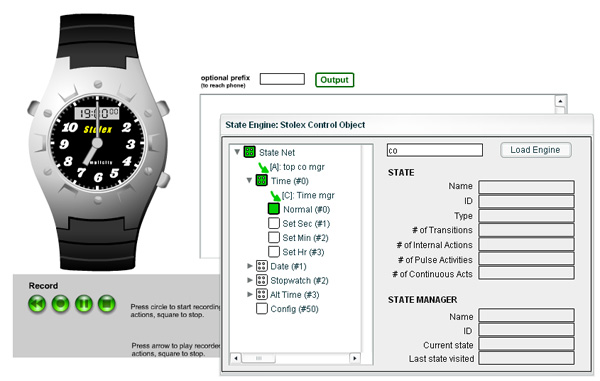

|
|
This component is a tool for watching the run-time behavior of a state machine, and is provided with the distribution. By default, it appears in the Components panel under the folder "FStEng Debbugging Tools". The tool allows you to see the structure of a state machine while your movie is running. States and managers that are active are colored in green. In the following image, the tool is located on the right hand side.
|  |
As your simulation runs, the tool updates itself with the current managers and states. If you click on a state or manager pictured, the tool displays information about that object, such as name, ID, and other characteristics, on the right hand side. The symbols in the tree have the following meaning:
|
Type |
Active |
Inactive |
| state | ||
| hState | ||
| hStateC | ||
| stateMgr |
Open the Component panel (Window > Development Panels > Components), find and Open the FStEng Debugging Tools folder, and drop the RTVis component onto the Stage. The actual placement is irrelevant--the tool uses the PopUp manager to open a window above content on the screen. Test your movie as normal.
When you want to see the run-time behavior of your simulation, enter the path from _root to the clip and instance name of your stateEngine, then press Load Engine. The tool will read the structure from the given stateEngine, or tell you "Not Found / Re-enter" if it cannot find the instance (remember to use the instance name, not the state engine name).
Use your simulation as you would normally, and watch the current states and managers change as your simulation proceeds. Click the down arrow on the left of an hState, hStateC, or stateMgr to open that branch and inspect the sub-network. Click on those objects when the branch is open to hide the branch. Click on any state or manager in the tree view to inspect values related to that object.
When you have finished using RTVis and are ready for production, remove RTVis from the Stage, and delete it from your Library. You can always put it back if you need further debugging, but this process makes sure you don't have unnecessary symbols loaded before the first frame.
If your simulation is not working as you expect, the most common problem we have encountered is that we erroneously defined enter or leave actions overriding the enter or leave method (these are internal routines not to be touched), instead of the correct entActs and lvActs, respectively. If this is not the problem, check the case of entActs and lvActs, because Flash will not warn you about improper case (AS 2.0 is case sensitive), and will ignore your actions, unless you define your state variables as type state (or hState, or hStateC)--in which case Flash will signal a compile error if entActs or lvActs are improperly spelled.
|
|